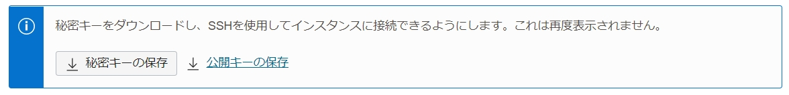
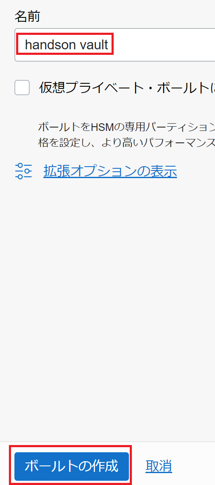
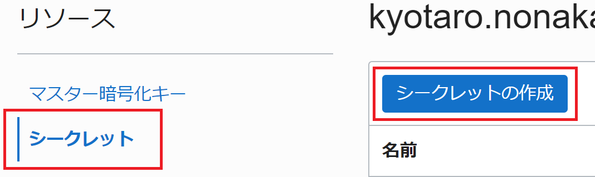
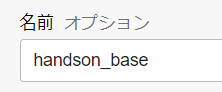
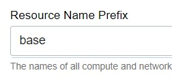
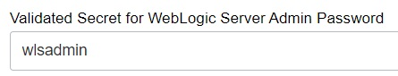
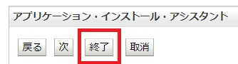

前提条件
- クラウド環境
- Oracle Cloudのアカウントを取得済みであること
ハンズオンの全体像
- WebLogic Server for OCI(UCM)環境を作成します
- アプリケーションが利用するAutonomous Databaseを作成します
- WebLogicにデータベースの設定を行います
- WebLogicにアプリケーションをデプロイします
事前準備
1. SSHキーペアを用意する
任意のSSHキーペアをご用意ください。
新たに作成する場合は、左上のハンバーガーメニューを展開して、「コンピュート」から「インスタンス」を選択し、「インスタンスの作成」をクリックします。
作成画面より、SSHキーの「秘密キー」と「公開キー」の両方をダウンロードし、利用します。

2. OCI VaultでSecretを作成する
WebLogic Server for OCIでは、WebLogic作成時の管理用パスワードはOCI Vaultにて管理します。
左上のハンバーガーメニューを展開して、「アイデンティティとセキュリティ」から「ボールト」を選択します。

「ボールトの作成」をクリックします。

名前に「handson vault」と入力し、「ボールトの作成」をクリックします。 
ボールトの作成には数分かかる場合があります。適宜ブラウザの更新を行ってください。
作成したボールト名をクリックし、「キーの作成」をクリックします。

名前に「handson key」と入力し、「キーの作成」をクリックします。

「シークレット」をクリックし、「シークレットの作成」をクリックします。 
名前に「wlsadmin」と入力し、暗号化キーは「handson key」を選択し、シークレットコンテンツは「welcome1」と入力し、「シークレットの作成」をクリックします。
3. アプリケーションの取得
こちらより、本ハンズオンで利用するアプリケーションをダウンロードしてください。
4. OCI IAMで権限の設定を行う(Optional)
WebLogic Server for OCI の利用には以下の2種類のポリシー設定が必要です。
あらかじめこれらの権限設定を実施した上で、WebLogic Server for OCIによるプロビジョニングを行います。
- WebLogic Server for OCI環境の管理者が所属するグループに対するポリシー
- WebLogic Server for OCI のWebコンソールの利用や作成後のリソース/環境の管理に必要な権限
- WebLogic Server for OCI が利用する動的グループに対するポリシー
- WebLogic Server for OCIがプロビジョニングを行う際に必要な権限
この手順では、ルート・コンパートメントにプロビジョニングを行うため、自動でこれらの権限が設定されます。
- WebLogic Server for OCIがプロビジョニングを行う際に必要な権限
環境の作成
WebLogic Server環境を作成します。
1. マーケットプレイスにてスタックを起動する
左上のハンバーガーメニューを展開して、「マーケットプレイス」から「すべてのアプリケーション」を選択します。
検索欄に「Oracle WebLogic Server Enterprise Edition UCM」と入力し、先頭に出てくるパネルをクリックします。
バージョンは12.2.1.4を選択します。
12.2.1.4.*** の *** の部分はキャプチャと異なる場合があります。
チェックボックスにチェックを入れ、「スタックの起動」をクリックします。
2. WebLogic Server for OCIをプロビジョニングする
Note: 特に記載のない部分に関してはデフォルトの値で構いません
名前に「handson_base」と入力し、「次」をクリックします。

「Resource Name Prefix」 に「base」と入力します。

「SSH Public Key」では、事前準備で作成したSSH Keyを選択します。
「Validated Secret for WebLogic Server Admin Password」では、事前準備で作成したSecret(wlsadmin)を選択します。

「Virtual Cloud Network Strategy」は「Create new VCN」を選択し、「WebLogic Server Network」は 「wls_handson」と入力します。
「次」をクリックし、「作成」をクリックします。
Note: 作成完了までは10分ほどかかります。その間に次の「1.3. データベースをセットアップする」に進んでいただいても構いません。
3. データベースをセットアップする
左上のハンバーガーメニューを展開して、「Oracle Database」から「Autonomous Transaction Processing」を選択します。
「Autonomous Databaseの作成」をクリックします。
「表示名」に「handson_db」、「データベース名」に「handsonDB」と入力します。
「パスワード」と「パスワードの確認」に「Welcome1234!」と入力します。
「ライセンスとOracle Databaseエディションの選択」は「ライセンス込み」を選択します。
「Autonomous Databaseの作成」をクリックします。
ステータスが「使用可能」になったら、「DB接続」をクリックします。
「ウォレットのダウンロード」をクリックします。※この後の手順で利用するためにダウンロードしておきます。
「パスワード」と「パスワードの確認」にOracle1234!と入力し、「ダウンロード」をクリックします。
データベース・アクションをクリックします。
「ユーザー名」にADMIN、「パスワード」にWelcome1234!と入力します。※セッションの関係で、入力の必要がない場合があります。
「SQL」のパネルをクリックします。
以下のSQLをワークシートに貼り付け、F5を押下し全文を実行します。
CREATE TABLE "ADMIN"."TODO_HEAD"
(
"RID" NUMBER(10,0),
"STATUS" NUMBER(2,0),
"TITLE" VARCHAR2(100 BYTE),
"MEMO" VARCHAR2(1000 BYTE),
"IMPORTANCE" NUMBER(2,0),
"INCHARGE" NUMBER(10,0),
"CREATE_DATE" DATE,
"MODIFY_DATE" DATE
);
INSERT INTO "ADMIN"."TODO_HEAD"
(
"RID",
"STATUS",
"TITLE",
"MEMO",
"IMPORTANCE",
"INCHARGE",
"CREATE_DATE",
"MODIFY_DATE"
) VALUES (
0,
0,
'TODO TITLE',
'TODO MEMO',
0,
1000,
sysdate,
sysdate
);
4. 作成したWebLogic Server for OCIにJDBC接続の設定を行う
左上のハンバーガーメニューを展開して、「コンピュート」から「インスタンス」を選択します。
「base-bastion-instance」のパブリックIPと「base-wls-0」のプライベートIPを確認します。
Note: SSHクライアントに関して
ここからの手順は、OCI Cloud Shellを用いてSSH接続を行います。
使い慣れたCUIのSSHクライアントツール(TeraTermやVS Codeなど)を用いて作業しても構いません。
コンソール右上、OCI Cloud ShellのアイコンをクリックしてOCI Cloud Shellを開きます。
Cloud Shell上の歯車アイコンをクリックし、「アップロード」をクリックし、ダイアログから
- SSH Key(Private key)
- 取得したデータベース接続用のWallet
をアップロードします。
SSH Key の Permissionを変更します
chmod 600 <ssh key>
Walletを作成したWebLogic Server for OCIのインスタンスにscpで転送します。
scp -i <SSH Keyのパス> \
-o ProxyCommand='ssh -i <SSH Keyのパス> \
-W %h:%p opc@<base-bastion-instanceのパブリックIP>' \
~/Wallet_handsonDB.zip opc@<base-wls-0のプライベートIP>:~/
以下コマンドを実行し、WebLogicインスタンスにSSHログインします。
※Are you sure you want to continue connectingにはyesを選択します。
ssh -i <SSH Keyのパス> \
-o ProxyCommand='ssh -i \
<SSH Keyのパス> -W %h:%p opc@<base-bastion-instanceのパブリックIP>' \
opc@<base-wls-0のプライベートIP>
rootユーザーにスイッチします。
sudo su -
ファイルを移動します。
mv /home/opc/Wallet_handsonDB.zip /home/oracle/
所有者を変更します。
chown oracle:oracle /home/oracle/Wallet_handsonDB.zip
ログアウトします。
exit
oracleユーザーにスイッチします。
sudo su - oracle
Walletをunzipします。
unzip Wallet_handsonDB.zip -d handsondb
Note: 以下手順はローカル端末のコマンドプロンプト(Windows 10)など、任意のコマンドライン・アプリケーションを利用してください。
コマンド内、<SSH Keyのパス>、 <base-bastion-instanceのパブリックIP>、<base-wls-0のプライベートIP> をそれぞれ書き換え、実行します。
ssh -i <SSH Keyのパス> opc@<base-bastion-instanceのパブリックIP> \
-L 7001:<base-wls-0のプライベートIP>:7001
別ウィンドウまたは別タブでhttp://localhost:7001/console/ にブラウザ上よりアクセスし、以下を入力しWebLogicにログインします。
- ユーザー名:
weblogic - パスワード:
welcome1
「ロックして編集」をクリックし、左メニューより「サービス」横の＋ボタンをクリックし、「データ・ソース」をクリックします。
「新規」をクリックし、「汎用データ・ソース」をクリックします。
「名前」に「Handson」と入力し、「JNDI名」に「handsonDB」と入力し、「次」をクリックします。
「次」をクリックし、「次」をクリックします。
「データベース名」と「ホスト名」に任意の値を入力し、「データベース・ユーザー名」には「ADMIN」、「パスワード」と「パスワードの確認」には「Welcome1234!」と入力します。
Note: データベース名とホスト名
Autonomous Databaseに接続する場合、ここで入力する値は次の画面で書き換えることとになるので、任意の値で構いません。
URLにjdbc:oracle:thin:@handsondb_tpと入力し、プロパティに
oracle.net.tns_admin=/home/oracle/handsondb
user=ADMIN
oracle.net.wallet_location=/home/oracle/handsondb
oracle.jdbc.fanEnabled=false
oracle.net.ssl_version=1.2
oracle.net.ssl_server_dn_match=true
と入力し、「次」をクリックします。
「base_cluster」を選択し、「終了」をクリックします。
「変更のアクティブ化」をクリックします。
5. WebLogic Server for OCIにアプリケーションをデプロイする
「ロックして編集」をクリックし、メニューより「デプロイメント」をクリックします。
「インストール」をクリックします。
「ファイルをアップロード」をクリックします。
「デプロイメント・アーカイブ」の「ファイルを選択」をクリックします。
配布したWARファイルをアップロードし、「次」をクリックします。
「次」をクリックし、「次」をクリックします。
「base_cluster」を選択し、「次」をクリックします。
「終了」をクリックします。

「変更のアクティブ化」をクリックします。
「ロックして編集」をクリックし、「制御」タブをクリックします。
「TodoApp-0.0.1-SNAPSHOT」にチェックを入れ、「起動」をクリックし、「すべてのリクエストを処理」をクリックします。
「はい」をクリックします。
6. アプリケーションにアクセスする
左上のハンバーガーメニューを展開して、「ネットワーキング」から「ロード・バランサ」を選択します。
「base-lb」のIPアドレスを確認します。
https://<ロードバランサーのIPアドレス>/todo/ にブラウザ上よりアクセスし、アプリケーションが表示されることを確認します。